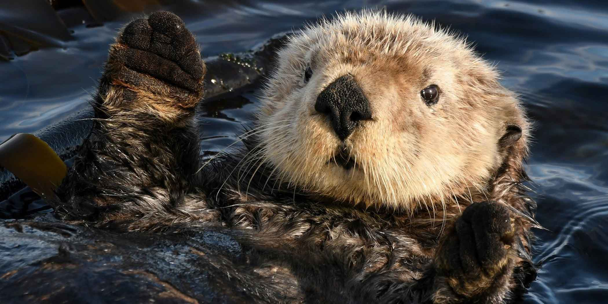

About Sea Otters
Sea otters are marine mammals that live along the coasts of the northern Pacific Ocean.
They are known for their playful behavior and dense fur, which helps them stay warm in cold water.
Sea otters help maintain healthy marine ecosystems.
Sea otters are also known for their intelligence and problem-solving abilities.
Images


Interesting Facts
- Sea otters have the densest fur of any animal, with up to 1 million hairs per square inch.
- They use tools, such as rocks, to open shellfish.
- They can float on their backs while eating, using a piece of driftwood as a table.
- Sea otters can hold their breath for up to 5 minutes while diving for food.
- They play a crucial role in maintaining kelp forest ecosystems by controlling sea urchin populations.
Top 3 Reasons Why Sea Otters Are Amazing
- They have a unique and playful personality that makes them endearing to humans.
- They are a keystone species, meaning their presence has a significant impact on the ecosystem.
- They have adapted to life in the water with specialized behaviors and physical traits.
Learn more
For more information about sea otters, visit the National Geographic Sea Otter Page .